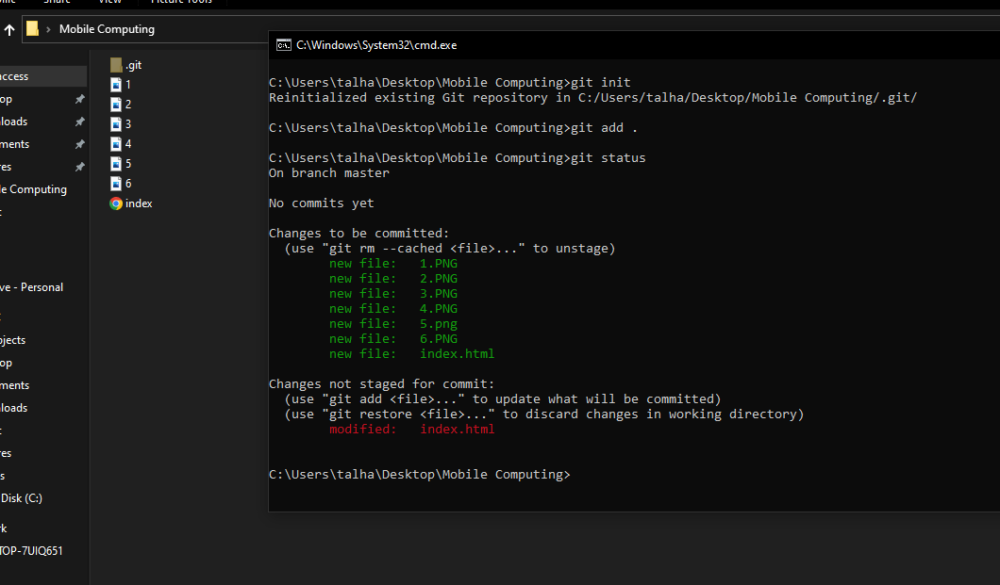
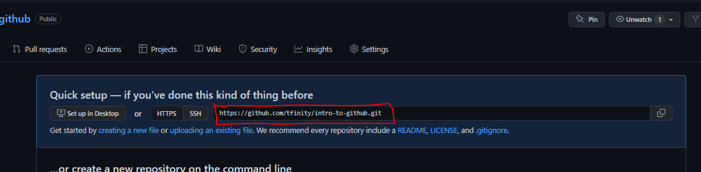
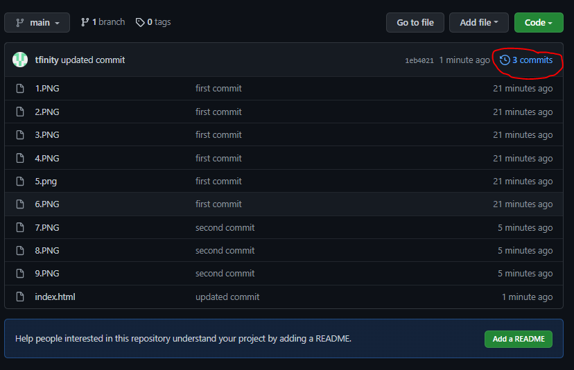
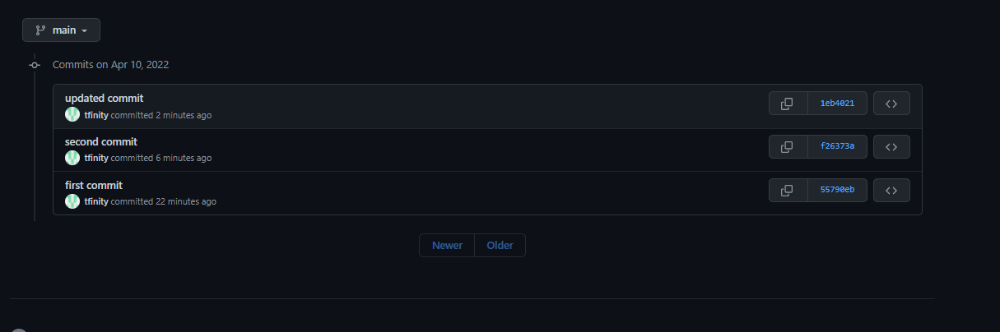

Getting Started
1.
The First thing that you need is to download Git. For that goto:
Download
and download Git for your Respective OS

2.
Now you will need a github account to keep and track your Files. For that goto Github.com
And create your account. If you already have a account just login.
Creating Repository
Now you will need a repository to store your files.
1.
To create Repository Login to your account and hit the + Icon at the top right corner -> New Repository

2.
Give your Repository a Name and then hit Create Repository
3.
After you Repository is Created You will see a Page similar to this.

Add Git to Project Folder
1.
Go to Your Project folder and in the address bar enter cmd and hit Enter

2.
In CMD enter "git init" and press enter. You will see a folder named ".git" created in your project folder.

Add Files to Local Repository
1.
To add Files to Local Repository use Command "git add filename" OR "git add ." to add all present files.
2.
Then Enter Command "git status" to Check Status of your files and repository

Green Files are the ones that are synced with repository and red are the ones that are not synced.
Push Files to your Github repository
Go to Step "Craeting Repository" Part 3 and keep in view the block that States "…or create a new repository on the command line"
3.
Commit you changes to your repository with command "git commit -m "name of your choice"
4.
Select your Branch with Command "git branch -M main"
5.
Connect to your Github Repository with Command "git remote add origin YourGithubRepolink"

6.
Push Your Files to Github Repository with command "git push -u origin main"
7.
Now Refresh your web Browser and you will see your Files in you Github Repositorys
Push new created and updated files
1.
To push new created files and updated files run Commands "git add .", "git commit -m "name of your choice", "git push -u origin main" one after the other
2.
You can track all your commits from the Commits option


Pull Unsaved changes
To pull updated files from github Repository use Command "git pull"